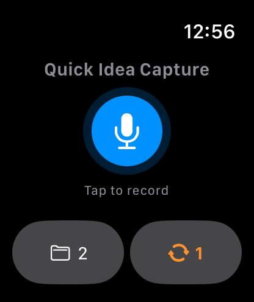
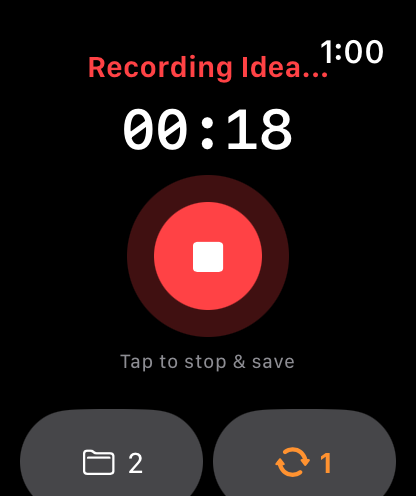
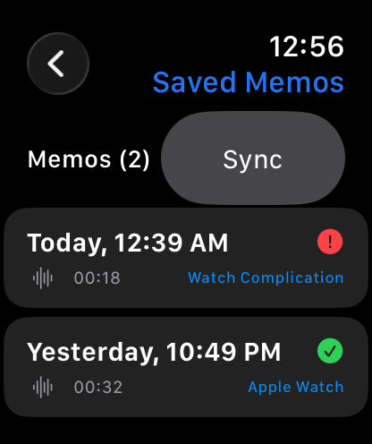

Capture voice memos instantly on Apple Watch or iPhone. On-device Whisper and Qwen3 LLM turn stream-of-consciousness audio into clean Markdown requirements, numbered logic, and action items — completely offline.


Experience how disorganized spoken voice memos become production-ready specifications with zero cloud round-trips.
No accounts, no cloud APIs, no subscriptions. Everything runs directly on your Apple hardware with native CoreML and Metal acceleration.
Audio recording is decoupled from copy synthesis. Stage 1 executes OpenAI's Whisper model on the Apple Neural Engine via WhisperKit CoreML for verbatim acoustic accuracy. Stage 2 executes Qwen3 via MLX Swift with Apple Silicon GPU acceleration to extract requirements, conditions, and checklists into Markdown.

Capture audio with a single tap on your watch face complications (Circular, Corner, Rectangular, Inline). Operates 100% offline away from your iPhone. Automatically transfers high-efficiency AAC audio when back in range.
Your voice and thoughts never pass through external servers. Zero telemetry, zero analytics libraries, zero advertising IDs. All notes and audio are stored securely in your device's sandboxed local filesystem.
Ships with pre-bundled Qwen3-0.6B ready on first launch. Download the high-fidelity Qwen3-4B on-demand in Settings, or configure a private local Ollama network host.
Every note is formatted in GitHub-flavored Markdown. Copy bulleted requirements directly into GitHub issues, Jira tickets, Obsidian vaults, Apple Notes, or Slack channels with a single tap. Audio playback includes interactive waveform scrubbing and speed adjustments.
Keep your phone in your pocket or on your desk. Capture fleeting ideas while driving, running, or in meetings.

One touch on any watch face complication begins immediate audio recording without waiting for the full UI to load. Tactile haptics confirm recording status.
Audio is saved locally in watch flash storage. As soon as you are near your iPhone, encrypted WatchConnectivity transfers queue and transfer seamlessly in the background.



Designed exclusively for modern iOS 17 and watchOS 10 native interfaces.


Unlike cloud assistants that send your audio recordings to remote data centers for surveillance or model training, Voxbrief processes 100% of your voice data locally on your Apple device. No cloud storage, no account registration, and no tracking.
Read Our Full Privacy Policy